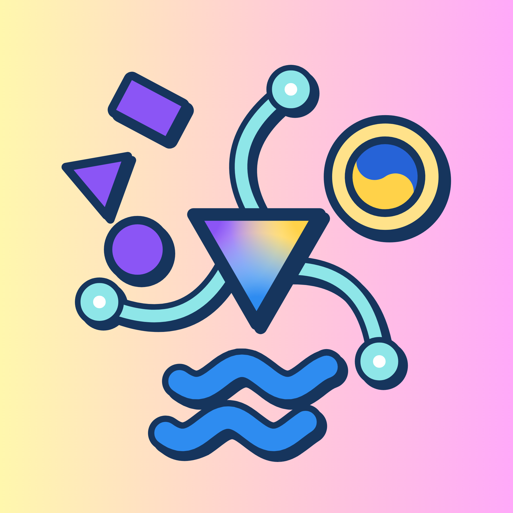
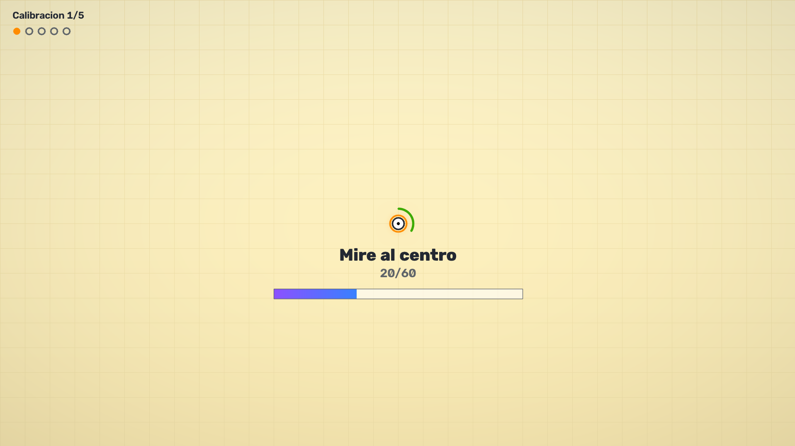
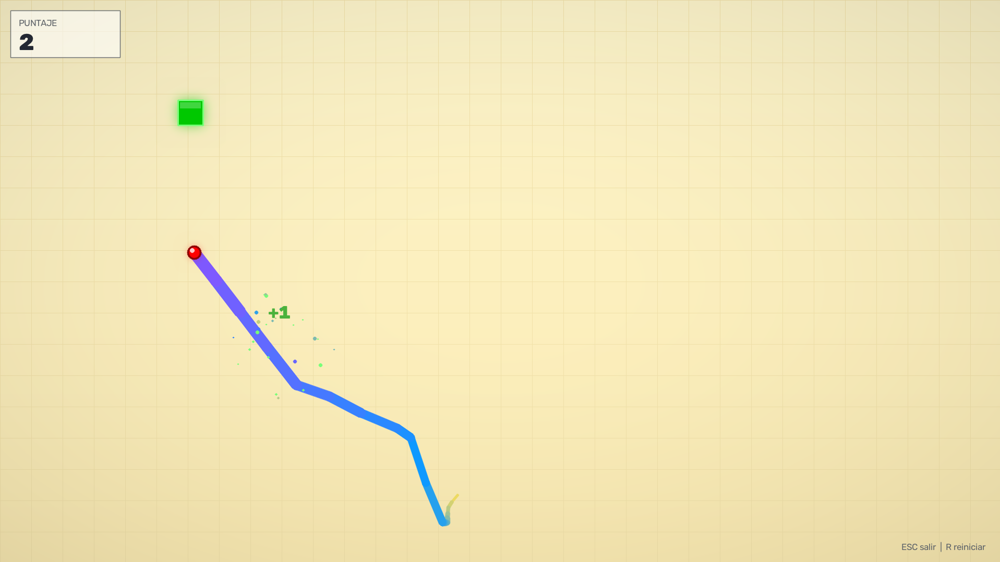
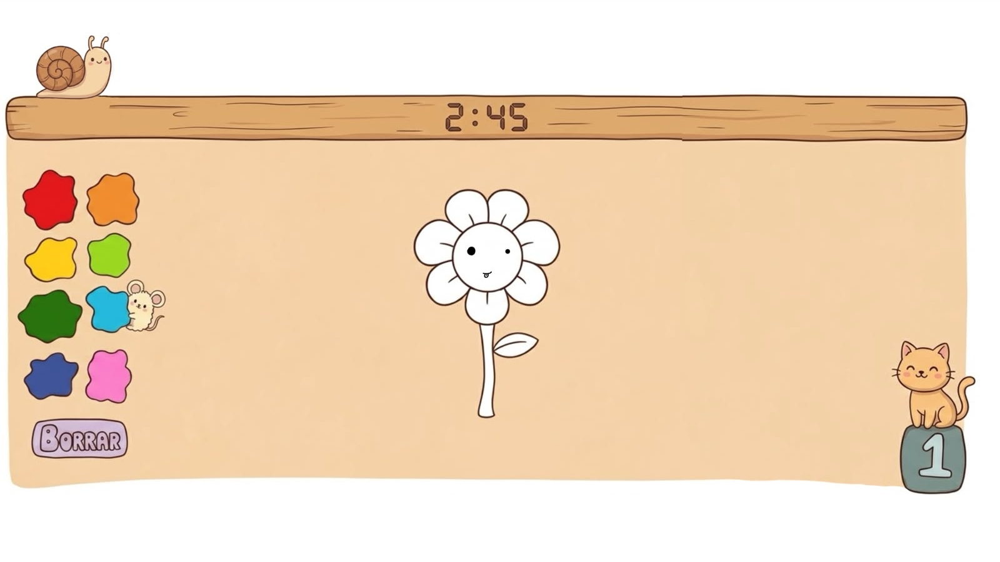

Tres librerías
MediaPipe
OpenCV
NumPy
Gaziris Nexus
Un motor que convierte el movimiento de los ojos en una forma de usar la computadora, pensado para chicos que no pueden manejar un mouse, un teclado o un lápiz.
Prototipo experimental en etapa de pruebas.

La discapacidad neuromotora limita la interacción de los chicos con su entorno, incluido el uso de computadoras, celulares y tabletas.
¿Qué pasaría si pudiera participar utilizando su mirada?
La regla del proyecto: solo el movimiento de los ojos. Nada de cabeza ni de cuerpo, porque muchos de los chicos a los que está dirigido no pueden moverse por sí solos.
Fuente: Bottinelli, L. (2024). La modalidad de educación especial en Argentina: características institucionales y evolución reciente de la oferta. III Congreso Internacional de Ciencias Humanas, Escuela de Humanidades, UNSAM. El dato proviene del Padrón Oficial de Establecimientos Educativos. No se encontraron datos públicos y actualizados sobre la cantidad de chicos con discapacidad neuromotora en el país.
El proyecto empezó entre mayo y junio de 2026, sin conocimientos previos del lenguaje de programación ni de los conceptos necesarios.

Desarrollo individual · 150 horas registradas en 5 meses
Como referencia se tomaron dos proyectos de código abierto desactualizados, cuya lógica se reestructuró para respetar la regla de usar solo los ojos.
Se usó inteligencia artificial de forma responsable: en la parte gráfica, como esta página, y como apoyo en pruebas y búsqueda de errores. Sus respuestas siempre se evaluaron y corrigieron.
El motor mueve un punto dentro de una ventana siguiendo la mirada. La calibración es lo que lo adapta a quien lo usa.
El puntero recorre toda la pantalla, pero todavía tiene ruido y funciona dentro de una ventana.
Depende de la iluminación, la distancia a la cámara y el equipo. Probado con cámara de 1080p y 8 GB de RAM.
Todavía no hubo pruebas con los destinatarios finales.
Funciona sin conexión a internet: las imágenes de la cámara nunca salen de la computadora.
Las pruebas se hicieron en distintos entornos de iluminación y distancia, y con personas que usan lentes en todas ellas. La idea es mantener sesiones cortas; su duración la definirían docentes y familiares.
El motor es un punto que se mueve con la mirada. Lo valioso es lo que se puede construir encima.

El motor es la base; el juego muestra una de sus posibles aplicaciones.
Para quien no puede sostener un lápiz, dibujar con la mirada puede ser una forma de expresarse.
Elegir colores o deshacer requiere hacer clic con la mirada, algo que depende de un puntero más estable. La forma de activar estos controles todavía no está definida.

Como el motor ya existe, cada nueva aplicación es más rápida y menos costosa de desarrollar: con una sola base se construye todo un catálogo.
Suscripción para escuelas, con una demo gratuita para probar antes de pagar. El alcance inicial es una herramienta y un juego, la serpiente.
Licencia para hasta cinco computadoras.
Pago mensual o anual.
Un plan para padres y tutores.
Proyección a futuro: no se incluye en los cálculos.
Distribución digital y propia: el producto se vende directamente desde la página del proyecto, sin intermediarios.
Alcance inicial: Argentina, con cobros en pesos.
La inversión valorada es de $1.558.988, casi toda en horas de trabajo propio. El costo directo fue de $58.988.
| Concepto | Cálculo | Monto |
|---|---|---|
| Trabajo | 150 h registradas × $10.000 por hora | $1.500.000 |
| Electricidad | 65 W × 150 h × $150 por kWh | $1.463 |
| Internet | $35.600 × 5 meses × 4,17% | $7.417 |
| Desgaste del equipo | $1.670.310 × 150 h ÷ 5.000 h de vida útil (3%) | $50.109 |
| Hardware adquirido | Sin compras específicas para el proyecto | $0 |
| Total valorado | $1.558.988 |
$10.000 por hora equivalen a $1.600.000 por mes (160 horas), unos USD 1.022 al dólar blue de $1.565. Es el piso del rango de un programador junior, por lo que la valoración es conservadora.
Fuentes: rango salarial según Coderhouse y Teclab; cotización según 0223 (2 de noviembre de 2026, valor variable en el tiempo). El consumo de 65 W, la vida útil de 5.000 horas, la tarifa de $150 por kWh y el abono de $35.600 son estimaciones del autor.
Con 8 escuelas, mantener el producto cuesta unos $272.740 por mes: $72.740 de costos fijos y $200.000 de mantenimiento.
| Concepto | Detalle | Monto mensual |
|---|---|---|
| Monotributo | Categoría A, prestación de servicios (fijo) | $49.527 |
| Hosting | InHosting, plan Empresas: $18.599 + 21% de IVA (fijo) | $22.505 |
| Dominio .com.ar | $8.500 por año ÷ 12 (fijo) | $708 |
| Mantenimiento | 4 h de base + 2 h por escuela: 20 h × $10.000 con 8 escuelas (mixto) | $200.000 |
| Total con 8 escuelas | $272.740 |
Hasta cinco computadoras. Con Mercado Pago Checkout a 18 días (3,56% + IVA = 4,31%), la comisión es de $1.723 y quedan $38.277 netos.
Por transferencia al CVU o alias no hay comisión.
Con 8 escuelas, es el máximo de horas mensuales que el proyecto puede pagar sin pérdida.
Fuentes: escala de monotributo de ARCA (2026); planes de hosting de InHosting; tarifas de Mercado Pago Checkout. Los precios están pendientes de validar con escuelas reales y sujetos a inflación.
Con 8 escuelas el proyecto cubre sus costos; con 19, el 1% de las escuelas especiales del país, recupera la inversión valorada en unos 8,7 meses.
| Indicador | Escenario | Resultado |
|---|---|---|
| Punto de equilibrio | $272.740 ÷ $38.277 por escuela | 8 escuelas |
| Ganancia con 8 escuelas | Mantenimiento de 20 h | $33.475/mes |
| Ganancia con 19 escuelas | Mantenimiento escalado a 47,5 h (costo de $547.740) | $179.522/mes |
| Recuperación de la inversión | $1.558.988 ÷ $179.522 | ≈ 8,7 meses |
| Facturación anual | 19 escuelas, dentro del tope de la Categoría A ($12.009.410) | $9.120.000 |
| Precio a la mitad | $20.000 por escuela | 15 escuelas |
El proyecto es viable en el escenario conservador, siempre que se valide el precio con escuelas reales.
Después del alcance inicial, el objetivo es ampliar el catálogo y llegar a otros países e idiomas.